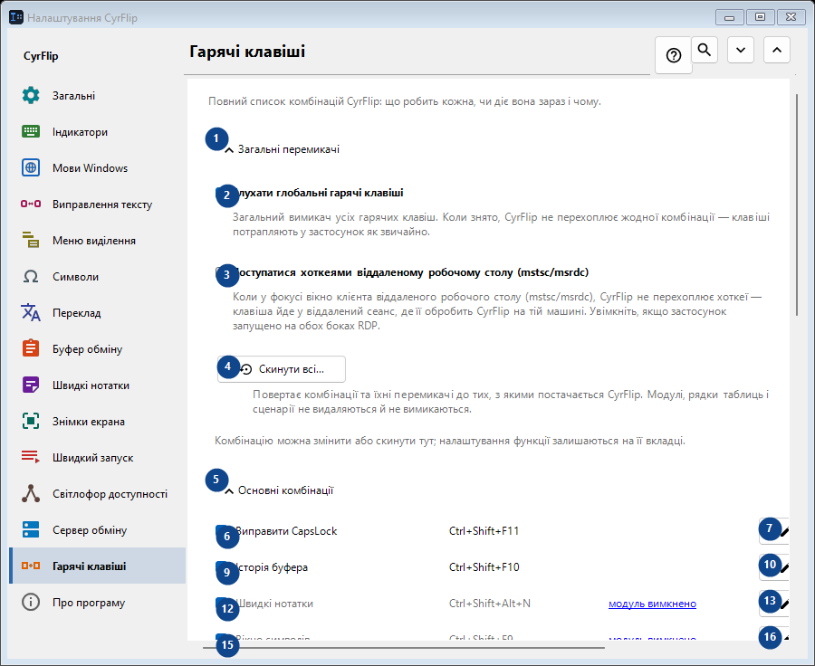
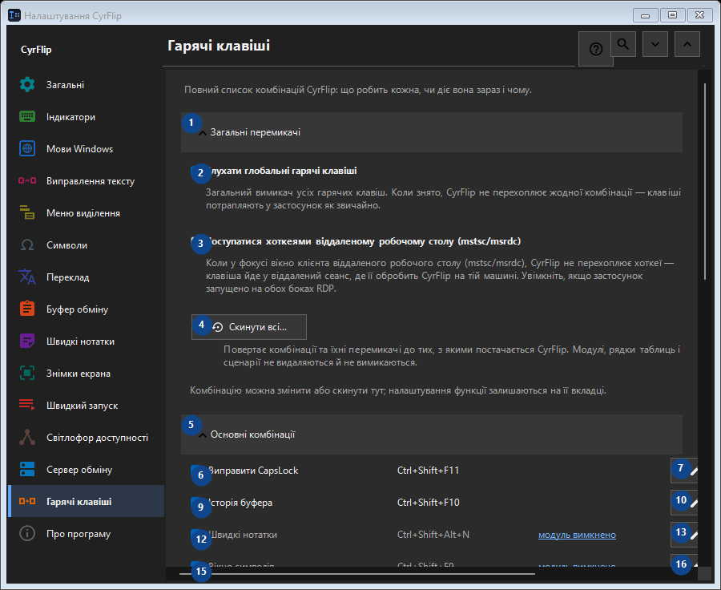

Гарячі клавіші
Для чого це вікно
Повний список комбінацій CyrFlip: що робить кожна, чи діє вона зараз і чому.


Порядок дій
Налаштування застосовуються одразу. Обов’язкового порядку немає; користуйтеся групами нижче.
Елементи
1. Загальні перемикачі
Скористайтеся командою, коли потрібна вказана дія. Прочитайте запит підтвердження перед згодою.
Ваші сполучення клавіш2. Слухати глобальні гарячі клавіші
Загальний вимикач усіх гарячих клавіш. Коли знято, CyrFlip не перехоплює жодної комбінації — клавіші потрапляють у застосунок як звичайно.
Ваші сполучення клавіш3. Поступатися хоткеями віддаленому робочому столу (mstsc/msrdc)
Коли у фокусі вікно клієнта віддаленого робочого столу (mstsc/msrdc), CyrFlip не перехоплює хоткеї — клавіша йде у віддалений сеанс, де її обробить CyrFlip на тій машині. Увімкніть, якщо застосунок запущено на обох боках RDP.
Ваші сполучення клавіш4. Скинути всі...
Повертає комбінації та їхні перемикачі до тих, з якими постачається CyrFlip. Модулі, рядки таблиць і сценарії не видаляються й не вимикаються.
Ваші сполучення клавіш5. Основні комбінації
Скористайтеся командою, коли потрібна вказана дія. Прочитайте запит підтвердження перед згодою.
Ваші сполучення клавіш6. Виправити CapsLock Ctrl+Shift+F11
Скористайтеся командою, коли потрібна вказана дія. Прочитайте запит підтвердження перед згодою.
Ваші сполучення клавіш7. Змінити... - Виправити CapsLock Ctrl+Shift+F11
Скористайтеся командою, коли потрібна вказана дія. Прочитайте запит підтвердження перед згодою.
Ваші сполучення клавіш8. За замовчуванням - Виправити CapsLock Ctrl+Shift+F11
Скористайтеся командою, коли потрібна вказана дія. Прочитайте запит підтвердження перед згодою. Елемент зараз недоступний. Спочатку ввімкніть функцію або виберіть запис.
Ваші сполучення клавіш9. Історія буфера Ctrl+Shift+F10
Скористайтеся командою, коли потрібна вказана дія. Прочитайте запит підтвердження перед згодою.
Ваші сполучення клавіш10. Змінити... - Історія буфера Ctrl+Shift+F10
Скористайтеся командою, коли потрібна вказана дія. Прочитайте запит підтвердження перед згодою.
Ваші сполучення клавіш11. За замовчуванням - Історія буфера Ctrl+Shift+F10
Скористайтеся командою, коли потрібна вказана дія. Прочитайте запит підтвердження перед згодою. Елемент зараз недоступний. Спочатку ввімкніть функцію або виберіть запис.
Ваші сполучення клавіш12. Швидкі нотатки Ctrl+Shift+Alt+N
Скористайтеся командою, коли потрібна вказана дія. Прочитайте запит підтвердження перед згодою.
Ваші сполучення клавіш13. Змінити... - Швидкі нотатки Ctrl+Shift+Alt+N
Скористайтеся командою, коли потрібна вказана дія. Прочитайте запит підтвердження перед згодою.
Ваші сполучення клавіш14. За замовчуванням - Швидкі нотатки Ctrl+Shift+Alt+N
Скористайтеся командою, коли потрібна вказана дія. Прочитайте запит підтвердження перед згодою. Елемент зараз недоступний. Спочатку ввімкніть функцію або виберіть запис.
Ваші сполучення клавіш15. Вікно символів Ctrl+Shift+F9
Скористайтеся командою, коли потрібна вказана дія. Прочитайте запит підтвердження перед згодою.
Ваші сполучення клавіш16. Змінити... - Вікно символів Ctrl+Shift+F9
Скористайтеся командою, коли потрібна вказана дія. Прочитайте запит підтвердження перед згодою.
Ваші сполучення клавіш17. За замовчуванням - Вікно символів Ctrl+Shift+F9
Скористайтеся командою, коли потрібна вказана дія. Прочитайте запит підтвердження перед згодою. Елемент зараз недоступний. Спочатку ввімкніть функцію або виберіть запис.
Ваші сполучення клавіш18. Світлофор доступності Ctrl+Shift+Alt+T
Скористайтеся командою, коли потрібна вказана дія. Прочитайте запит підтвердження перед згодою.
Ваші сполучення клавіш19. Змінити... - Світлофор доступності Ctrl+Shift+Alt+T
Скористайтеся командою, коли потрібна вказана дія. Прочитайте запит підтвердження перед згодою.
Ваші сполучення клавіш20. За замовчуванням - Світлофор доступності Ctrl+Shift+Alt+T
Скористайтеся командою, коли потрібна вказана дія. Прочитайте запит підтвердження перед згодою. Елемент зараз недоступний. Спочатку ввімкніть функцію або виберіть запис.
Ваші сполучення клавіш21. Знімок області екрана Ctrl+F12
Скористайтеся командою, коли потрібна вказана дія. Прочитайте запит підтвердження перед згодою.
Ваші сполучення клавіш22. Змінити... - Знімок області екрана Ctrl+F12
Скористайтеся командою, коли потрібна вказана дія. Прочитайте запит підтвердження перед згодою.
Ваші сполучення клавіш23. За замовчуванням - Знімок області екрана Ctrl+F12
Скористайтеся командою, коли потрібна вказана дія. Прочитайте запит підтвердження перед згодою. Елемент зараз недоступний. Спочатку ввімкніть функцію або виберіть запис.
Ваші сполучення клавіш24. Знімок усього екрана Ctrl+F11
Скористайтеся командою, коли потрібна вказана дія. Прочитайте запит підтвердження перед згодою.
Ваші сполучення клавіш25. Змінити... - Знімок усього екрана Ctrl+F11
Скористайтеся командою, коли потрібна вказана дія. Прочитайте запит підтвердження перед згодою.
Ваші сполучення клавіш26. За замовчуванням - Знімок усього екрана Ctrl+F11
Скористайтеся командою, коли потрібна вказана дія. Прочитайте запит підтвердження перед згодою. Елемент зараз недоступний. Спочатку ввімкніть функцію або виберіть запис.
Ваші сполучення клавіш27. Знімок області з малюванням Ctrl+Alt+F12
Скористайтеся командою, коли потрібна вказана дія. Прочитайте запит підтвердження перед згодою.
Ваші сполучення клавіш28. Змінити... - Знімок області з малюванням Ctrl+Alt+F12
Скористайтеся командою, коли потрібна вказана дія. Прочитайте запит підтвердження перед згодою.
Ваші сполучення клавіш29. За замовчуванням - Знімок області з малюванням Ctrl+Alt+F12
Скористайтеся командою, коли потрібна вказана дія. Прочитайте запит підтвердження перед згодою. Елемент зараз недоступний. Спочатку ввімкніть функцію або виберіть запис.
Ваші сполучення клавіш30. Знімок усього екрана з малюванням Ctrl+Alt+F11
Скористайтеся командою, коли потрібна вказана дія. Прочитайте запит підтвердження перед згодою.
Ваші сполучення клавіш31. Змінити... - Знімок усього екрана з малюванням Ctrl+Alt+F11
Скористайтеся командою, коли потрібна вказана дія. Прочитайте запит підтвердження перед згодою.
Ваші сполучення клавіш32. За замовчуванням - Знімок усього екрана з малюванням Ctrl+Alt+F11
Скористайтеся командою, коли потрібна вказана дія. Прочитайте запит підтвердження перед згодою. Елемент зараз недоступний. Спочатку ввімкніть функцію або виберіть запис.
Ваші сполучення клавіш33. Відкрити папку зі знімками Ctrl+F10
Скористайтеся командою, коли потрібна вказана дія. Прочитайте запит підтвердження перед згодою.
Ваші сполучення клавіш34. Змінити... - Відкрити папку зі знімками Ctrl+F10
Скористайтеся командою, коли потрібна вказана дія. Прочитайте запит підтвердження перед згодою.
Ваші сполучення клавіш35. За замовчуванням - Відкрити папку зі знімками Ctrl+F10
Скористайтеся командою, коли потрібна вказана дія. Прочитайте запит підтвердження перед згодою. Елемент зараз недоступний. Спочатку ввімкніть функцію або виберіть запис.
Ваші сполучення клавіш36. Відкрити меню з клавіатури Ctrl+Shift+Alt+M
Скористайтеся командою, коли потрібна вказана дія. Прочитайте запит підтвердження перед згодою.
Ваші сполучення клавіш37. Змінити... - Відкрити меню з клавіатури Ctrl+Shift+Alt+M
Скористайтеся командою, коли потрібна вказана дія. Прочитайте запит підтвердження перед згодою.
Ваші сполучення клавіш38. За замовчуванням - Відкрити меню з клавіатури Ctrl+Shift+Alt+M
Скористайтеся командою, коли потрібна вказана дія. Прочитайте запит підтвердження перед згодою. Елемент зараз недоступний. Спочатку ввімкніть функцію або виберіть запис.
Ваші сполучення клавіш39. Надіслати буфер на сервер
Скористайтеся командою, коли потрібна вказана дія. Прочитайте запит підтвердження перед згодою.
Ваші сполучення клавіш40. Змінити... - Надіслати буфер на сервер
Скористайтеся командою, коли потрібна вказана дія. Прочитайте запит підтвердження перед згодою.
Ваші сполучення клавіш41. За замовчуванням - Надіслати буфер на сервер
Скористайтеся командою, коли потрібна вказана дія. Прочитайте запит підтвердження перед згодою. Елемент зараз недоступний. Спочатку ввімкніть функцію або виберіть запис.
Ваші сполучення клавіш42. Отримати буфер із сервера
Скористайтеся командою, коли потрібна вказана дія. Прочитайте запит підтвердження перед згодою.
Ваші сполучення клавіш43. Змінити... - Отримати буфер із сервера
Скористайтеся командою, коли потрібна вказана дія. Прочитайте запит підтвердження перед згодою.
Ваші сполучення клавіш44. За замовчуванням - Отримати буфер із сервера
Скористайтеся командою, коли потрібна вказана дія. Прочитайте запит підтвердження перед згодою. Елемент зараз недоступний. Спочатку ввімкніть функцію або виберіть запис.
Ваші сполучення клавіш45. Миша
Скористайтеся командою, коли потрібна вказана дія. Прочитайте запит підтвердження перед згодою.
Ваші сполучення клавіш46. Змінити... - Меню над виділенням Ctrl + права кнопка миші
Скористайтеся командою, коли потрібна вказана дія. Прочитайте запит підтвердження перед згодою.
Ваші сполучення клавіш47. За замовчуванням - Меню над виділенням Ctrl + права кнопка миші
Скористайтеся командою, коли потрібна вказана дія. Прочитайте запит підтвердження перед згодою. Елемент зараз недоступний. Спочатку ввімкніть функцію або виберіть запис.
Ваші сполучення клавіш48. Перетворення розкладок
Скористайтеся командою, коли потрібна вказана дія. Прочитайте запит підтвердження перед згодою.
Ваші сполучення клавіш49. Переклад
Скористайтеся командою, коли потрібна вказана дія. Прочитайте запит підтвердження перед згодою.
Ваші сполучення клавіш50. Швидкий запуск
Скористайтеся командою, коли потрібна вказана дія. Прочитайте запит підтвердження перед згодою.
Ваші сполучення клавіш51. Windows
Скористайтеся командою, коли потрібна вказана дія. Прочитайте запит підтвердження перед згодою.
Ваші сполучення клавіш